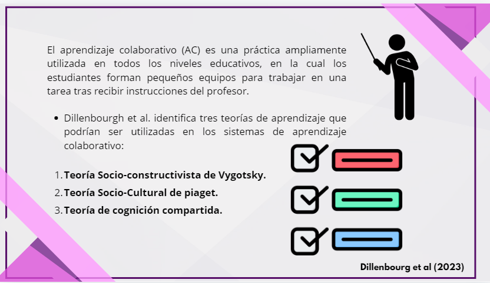
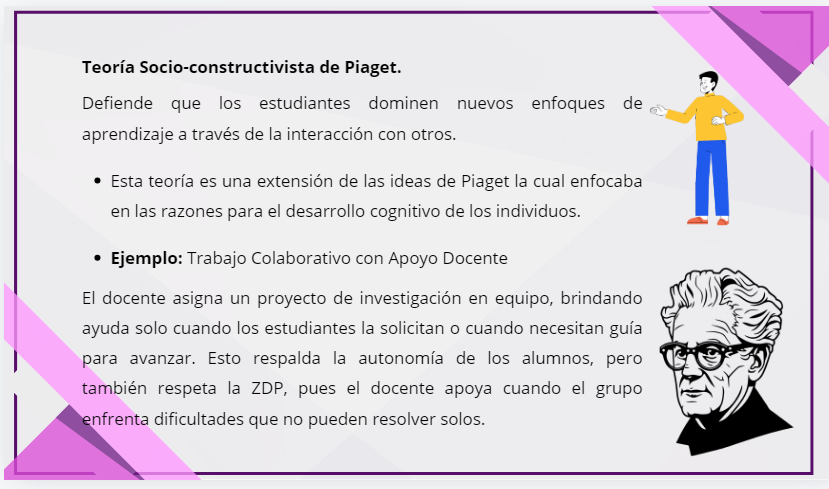
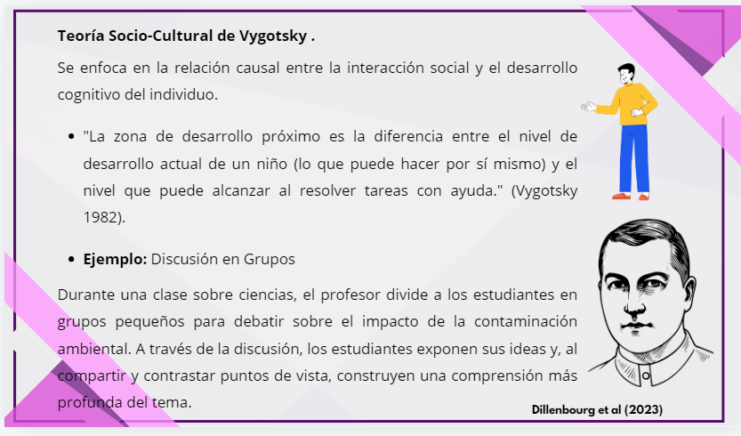
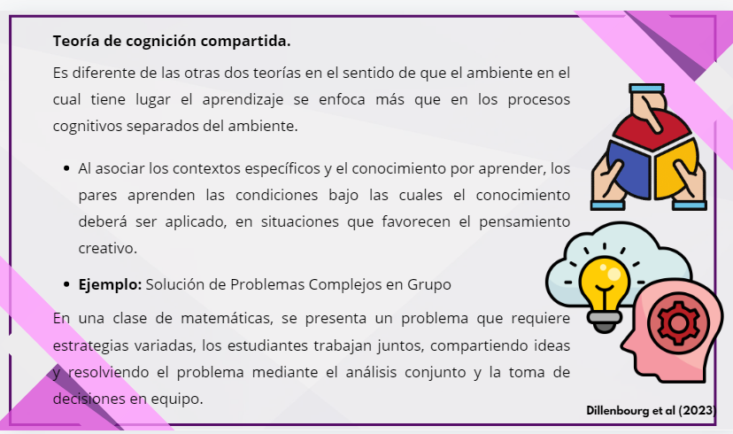
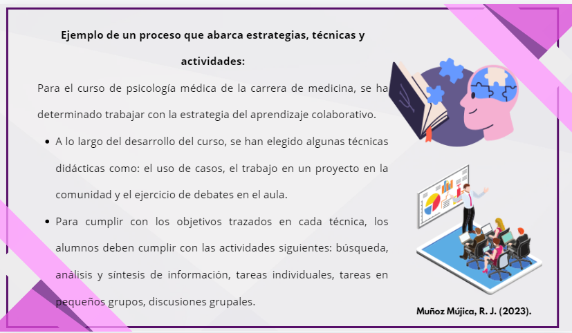

Clasificación de Técnicas Didácticas
Técnicas
(Períodos Cortos)
- Métodos de consenso
- Juegos de negocios
- Debates
- Discusión en panel
- Seminario
- Simposio
- Juego de roles
- Simulaciones
Estrategias
(Períodos Largos)
- Aprendizaje basado en problemas
- Método de casos
- Método de proyectos
- Sistema de instrucción personalizada
